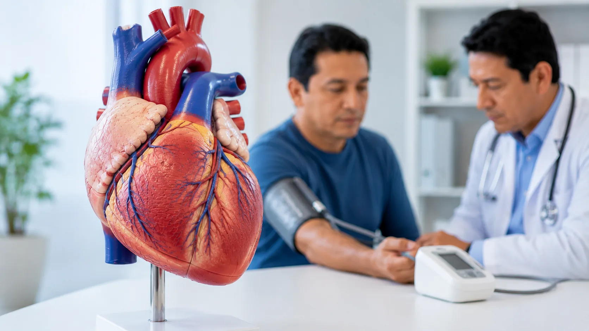

01
Cambios persistentes de energía
Cansancio inusual, menor tolerancia a actividades habituales o variaciones notorias en la vitalidad diaria.
Prevención
La prevención ayuda a observar hábitos, reconocer cambios relevantes y tomar decisiones informadas antes de que los problemas avancen.

Concepto base
Prevenir significa actuar con anticipación: aprender, observar, registrar cambios y fortalecer rutinas que favorecen la salud y la calidad de vida.
Lo más importante
Registrar cambios, sostener hábitos protectores y preparar consultas permite conversar mejor con profesionales cuando corresponde.
Observación preventiva
Estas señales no equivalen a un diagnóstico. Son referencias educativas para prestar atención, registrar cambios y buscar orientación profesional si persisten, se intensifican o generan preocupación.
Cansancio inusual, menor tolerancia a actividades habituales o variaciones notorias en la vitalidad diaria.
Dificultad frecuente para dormir, despertares repetidos o sensación sostenida de descanso insuficiente.
Variaciones relevantes y no planificadas que conviene observar junto con otros hábitos y contextos.
Dolores, incomodidades o síntomas que se repiten y afectan actividades cotidianas.
Cambios sostenidos en motivación, atención, irritabilidad o interés por actividades habituales.
Cuando tareas normales comienzan a sentirse más difíciles, puede ser útil revisar patrones recientes.
Planificación
La frecuencia y pertinencia de cada control dependen de la edad, antecedentes, etapa de vida y criterio profesional. Esta lista funciona como mapa educativo para preparar conversaciones de salud.
Consejos prácticos en casa
Los hábitos protectores son prácticas cotidianas que ayudan a fortalecer el bienestar general. No reemplazan la atención profesional, pero sí construyen una base de cuidado sostenible.
Integrar actividad física adaptada a la condición personal favorece energía, movilidad y bienestar.
Elegir alimentos variados y observar porciones ayuda a sostener rutinas más equilibradas.
Mantener horarios, reducir estímulos nocturnos y cuidar el ambiente puede mejorar la calidad del sueño.
Pausas, respiración, vínculos de apoyo y actividades significativas ayudan a regular la carga diaria.
Recordatorios simples durante el día pueden apoyar concentración y confort físico.
Anotar patrones de sueño, energía o molestias facilita explicar lo observado en una consulta.
Conversar con personas de confianza favorece acompañamiento y decisiones mejor informadas.
Usar fuentes institucionales evita confusión y promueve un autocuidado más responsable.
Registrar patrones cotidianos ayuda a convertir dudas generales en conversaciones más claras.
Si algo se repite, empeora o limita tu rutina, conviene buscar orientación profesional.
Estos contenidos orientan y educan; no sustituyen una evaluación individual.
Preguntas frecuentes
No. La prevención también incluye educación, hábitos protectores y controles periódicos en personas que desean cuidar su bienestar antes de notar cambios relevantes.
No. Una señal de alerta es una invitación a observar, registrar y buscar orientación si hace falta. No debe interpretarse como diagnóstico.
Depende de edad, antecedentes, etapa de vida y criterio profesional. Lo recomendable es conversar con un profesional para definir una frecuencia adecuada.
No. Los hábitos apoyan el bienestar general, pero no sustituyen la evaluación individual cuando existe una preocupación o cambio persistente.
Puede ser útil llevar una lista de dudas, antecedentes, medicamentos o suplementos, cambios observados y hábitos recientes de sueño, alimentación y actividad.
Qué debes recordar
La prevención combina educación, controles, vacunación, hábitos y atención oportuna según la etapa de vida.
Fuentes y referencias
El contenido se orienta a educación general y debe complementarse con fuentes oficiales y orientación profesional individual.
También te puede interesar
Explora síntomas, enfermedades, medicamentos y recursos educativos conectados con este tema.
Cansancio persistente, energía baja y criterios para observar cambios.

Síntoma relacionadoDolor de pechoSeñal que requiere atención cuidadosa, especialmente si se acompaña de falta de aire.
Enfermedad relacionadaDiabetesInformación educativa para comprender glucosa, control y prevención.
Enfermedad relacionadaHipertensiónInformación sobre presión arterial y controles preventivos.
 Recurso educativoTemas de salud
Recurso educativoTemas de saludExplora rutas educativas organizadas por síntomas y condiciones.
 Recurso educativoRecursos IDB
Recurso educativoRecursos IDBGuías y materiales de apoyo para pacientes y familias.

Soy VITA. Puedo ayudarte a comprender síntomas, enfermedades y medicamentos mediante orientación médica informativa basada en evidencia científica.
Contenido preventivo general. Las señales de alerta no son diagnóstico, pero pueden indicar que conviene consultar. Revisa el criterio editorial y las referencias generales en Fuentes IDB.